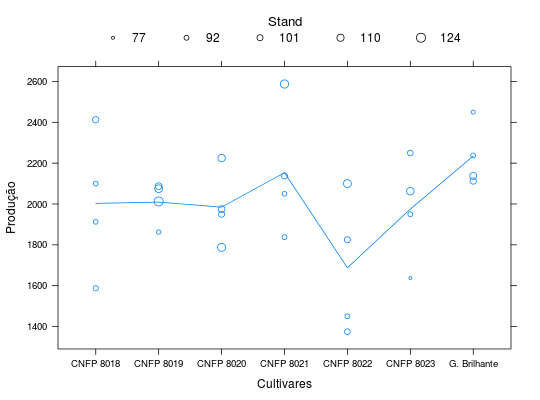
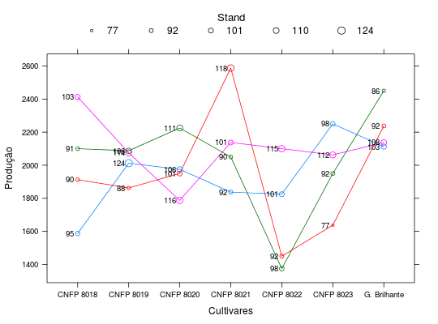

Dados de um ensaio de competição de cultivares de feijão onde foram registrados a produtivididade, bem como o estande por área útil, para sete cultivares de arroz. O experimento foi feito em delineamento de blocos completos ao acaso e a informação de estande foi medida para explicar parte da variação em produtividade das parcelas, já maior estande favorece maior produtividade.
Um data.frame com 28 observações e 4 variáveis
bloccultstandprodZIMMERMANN (2004), Tabela 14.3, pág. 293.
ZimmermannTb4.4 contém dados referentes ao
mesmo ensaio, porém com mais cultivares e sem a informação de
estande.
library(lattice) data(ZimmermannTb14.3)#> Warning: data set ‘ZimmermannTb14.3’ not foundstr(ZimmermannTb14.3)#> 'data.frame': 28 obs. of 4 variables: #> $ bloc : Factor w/ 4 levels "1","2","3","4": 1 1 1 1 1 1 1 2 2 2 ... #> $ cult : Factor w/ 7 levels "CNFP 8018","CNFP 8019",..: 1 2 3 4 5 6 7 1 2 3 ... #> $ stand: int 95 124 106 92 101 98 103 103 114 116 ... #> $ prod : num 1588 2012 1975 1838 1825 ...cex <- with(ZimmermannTb14.3, { x <- stand - min(stand) x <- 0.5 + 1 * x/max(x) L <- cbind(cex = fivenum(x), labels = fivenum(stand)) return(list(cex = x, legend = L)) }) key <- list( title = "Stand", cex.title = 1.1, columns = 5, points = list(pch = 1, cex = cex$legend[, "cex"]), text = list(c(sprintf("%0.0f", cex$legend[, "labels"])))) xyplot(prod ~ cult, data = ZimmermannTb14.3, type = c("p", "a"), cex = cex$cex, xlab = "Cultivares", ylab = "Produção", key = key)xyplot(prod ~ cult, groups = bloc, data = ZimmermannTb14.3, type = "a", xlab = "Cultivares", ylab = "Produção", key = key, panel = function(x, y, subscripts, groups, ...) { panel.xyplot(x = x, y = y, subscripts = subscripts, groups = groups, ...) col <- trellis.par.get()$superpose.symbol$col[ groups[subscripts]] panel.points(x = x, y = y, cex = cex$cex[subscripts], col = col) panel.text(x = x, y = y, pos = 2, cex = 0.8, labels = sprintf("%d", ZimmermannTb14.3$stand)) })